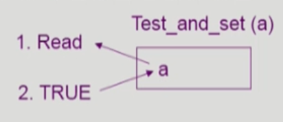
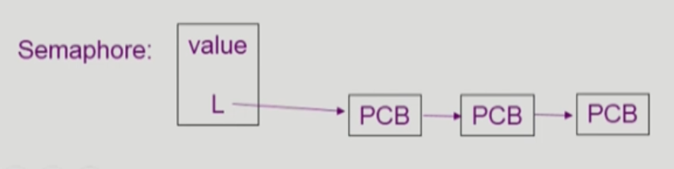
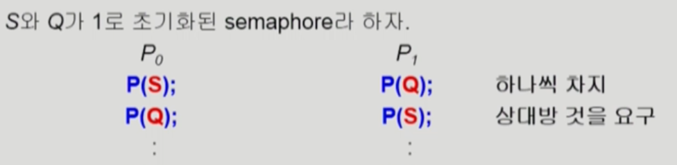

Critical Section 관리 알고리즘의 발전
Critical Section을 사용하기 위해 만족해야 하는 몇가지 조건들
- Mutual Exclusion(상호 배제)
- 프로세스 P_i가 critical section 부분을 수행중이면 다른 모든 프로세스들은 그들의 critical section에 들어가면 안된다.
- Progress(진행)
- 아무도 critical section에 있지 않은 상태에서 critical section에 들어가고자 하는 프로세스가 있으면 critical section에 들어가게 해주어야 한다.
- Bounded Waiting(유한 대기)
- 프로세스가 critical section에 들어가려고 요청한 후부터 그 요청이 허용될 때까지 다른 프로세스들이 critical section에 들어가는 횟수에 한계가 있어야 한다.
가정
- 모든 프로세스의 수행 속도는 0보다 크다.
- 프로세스들 간의 상대적인 수행 속도는 가정하지 않는다.
알고리즘 1
1
2
3
4
5
6
7
// code for P_0
do {
while(turn != 0); /* My turn? */
// ... critical section ...
turn = 1; /* Now it's P_1's turn */
// ... remainder section ...
} while(1);
- critical section에 들어가기 위해 본인의 차례인지 확인 (turn이라는 변수를 통해)
- 만약 자신의 차례가 아니라면 기다림
- 자신의 차례가 오면 들어가서 작업 수행, 나올 때 turn을 상대편 차례에 맞게 바꿔줌
문제점
- critical section에 반드시 교대로 들어가야함. (나 혼자 계속 못들어감, 상대편이 안들어가주면 영원히 내 차례 안옴)
- critical section에 들어가고자 하는 빈도의 차이가 있을 때 한계점이 분명함.
만족하는 조건 : Mutual Exclusion
만족하지 못하는 조건: Progress, Bounded Waiting
알고리즘 2
1
2
3
4
5
6
7
do {
flag[i] = true;
while(flag[j]);
// ... critical section ...
flag[i] = false;
// ...remainder section
}while(1);
- flag 배열로 입장 가능 여부 관리
- critical section에 입장하고 싶을 때 flag[i]를 true로 바꾸고 시작함
- 자신의 차례가 와서 작업이 끝났다면 flag[i]를 꺼주고(false로 만들고) 나감
문제점
- flag를 여러개 들어 놓으면 계속 기다리는 상태가 됨 (critical section에 들어가기 전에 flag를 켜고 시작하므로)
만족하는 조건 : Mutual Exclusion
만족하지 못하는 조건: Progress, Bounded Waiting
피터슨 알고리즘
1
2
3
4
5
6
7
8
do {
flag[i] = true;
turn = j;
while(flag[j] && turn == j);
// ... critical section ...
flag[i] = false;
// ... remainder section ...
} while(1);
- flag는 입장 희망 여부 배열
- turn은 현재 사용중인 프로세스를 나타냄
만족하는 조건 : Mutual Exclusion, Progress, Bounded Waiting
한계 : Busy Waiting 방식이기 때문에 계속 CPU와 memory를 쓰면서 wait
하드웨어적 해결
하드웨어를 사용한 critical section 문제해결
critical section 관련 문제 발생의 이유 : 메모리에 읽는 작업 + 쓰는 작업을 하나의 instruction으로 쓸 수 없기 때문에
만약 instruction 하나로 실행할 수 있다면? 문제는 쉽게 해결할 수 있음
Test_and_set

Test_and_set은 읽어오는 작업과 동시에 쓰는 작업을 실행할 수 있음 (하드웨어적 해결)
1
2
3
4
5
6
7
bool lock = false;
do {
while(Test_and_Set(lock));
// ... critical section ...
lock = false;
// ... remainder section ...
}
Semaphores를 통한 추상화
추상 자료형 Semaphore
Semaphore는 정수 변수를 가질 수 있으며 아래의 두 가지 atomic 연산에 의해서만 접근 가능
1
2
3
4
5
6
7
8
9
10
11
12
Semaphore S;
// If positive, decrement & enter
// Othrewise, wait until positive (busy-wait)
void P(Semaphore S) {
while(S <= 0);
S--;
}
void V(Semaphore S) {
S++;
}
P: 공유 데이터를 획득하는 과정
S: 공유 데이터를 반납하는 과정
Semaphore를 사용하는 이유
- lock을 걸고 lock을 푸는 것을 간단하게 만들어줌
- 공유자원을 획득, 반납하는 과정을 내부적으로 처리해줌
Semaphore를 통한 Critical Section 문제 해결
1
2
3
4
5
6
7
8
Semaphore mutex;
do {
P(mutex);
// ... critical section ...
V(mutex);
// ... remainer section ...
} while(1);
프로그래머가 일일이 코딩하지 않고 Semaphore를 이용하여 쉽게 해결할 수 있음
개선 방안
- 효율적이지 못한 busy-wait(spin lock) 방식 대신 Block & Wakeup 방식으로 개선
Block & Wakeup 방식의 Semaphore 구현
Semaphore 자료형의 정의

1
2
3
4
5
typedef struct
{
int value;
struct process *L; //Semaphore 때문에 잠들어있는 프로세스들을 연결시키는 큐가 생김
}semaphore;
block() 연산
커널은 block을 호출한 프로세스를 suspend 시킴
wakeup(P) 연산
block 된 프로세스 P를 wakeup 시킴
이 프로세스의 PCB를 ready queue로 옮김
P 연산과 V 연산의 정의
1
2
3
4
5
6
7
8
9
10
11
12
13
14
void P(Semaphore S) {
if(S.value < 0) {
add this process to S.L
block();
}
}
void V(Semaphore S) {
S.value++;
if(S.value <= 0){
remove a process P from S.L;
wakeup(P);
}
}
Busy-wait v.s. Block/wakeup
Block/wakeup 방식의 단점
block하고 깨우는 과정에서 오버헤드가 발생함
Busy-wait의 단점
critical section의 길이가 길어지면 starvation 현상이 발생함
해결방안 (섞어쓰기)
- Critical section의 길이가 긴 경우에는 Block/wakeup이 적합
- Critical section의 길이가 매우 짧은 경우에는 Busy-wait 방식이 적합
- 일반적으로는 Block/wakeup을 사용
두 가지 종류의 Semaphores
Counting semaphore
- 도메인이 0 이상인 임의의 정수값
- 주로 resource counting에 사용
Binary semaphore (= mutex)
- 0 또는 1 값만 가질 수 있는 semaphore
- 주로 mutual exclusion (lock/unlock)에 사용
Deadlock and Starvation
Deadlock 현상
둘 이상의 프로세스가 서로 상대방에 의해 충족될 수 있는 event를 무한히 기다리는 현상을 Deadlock 현상이라 한다.

위 처럼 P연산이 연달아 일어나지만 실행되지 못하고 기다리는 경우
V연산이 실행되지 못하기 때문에 영원히 기다리는 Deadlock 현상이 발생
Starvation 현상
프로세스가 semaphore 큐에서 빠져나갈 수 없어서 무기한 blocking이 일어나는 경우를 Starvation 현상이라 말한다.